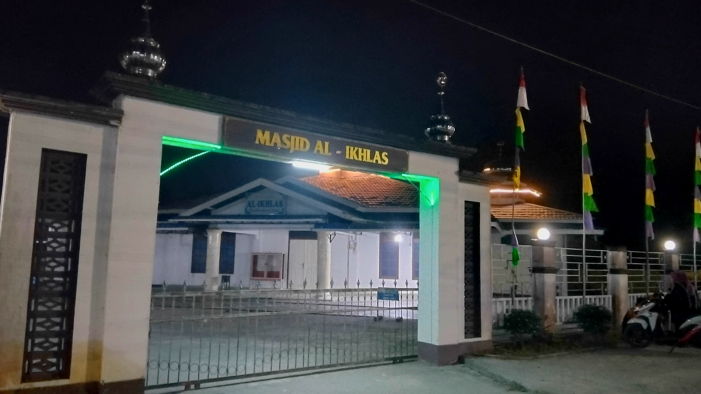

Sarana Publik


Fasilitas Desa Mensere
Berbagai fasilitas penunjang kegiatan pelayanan masyarakat, keagamaan, dan olahraga.
Pemerintahan
Kantor Balai Desa
Pusat pelayanan administrasi kependudukan dan tempat musyawarah pembangunan desa.

Keagamaan
Masjid Desa
Sarana ibadah utama dan pusat kegiatan keagamaan masyarakat setempat.
Olahraga
Lapangan Olahraga
Sarana olahraga outdoor dan wadah kegiatan turnamen antar pemuda desa.